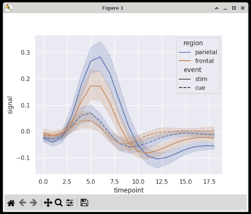
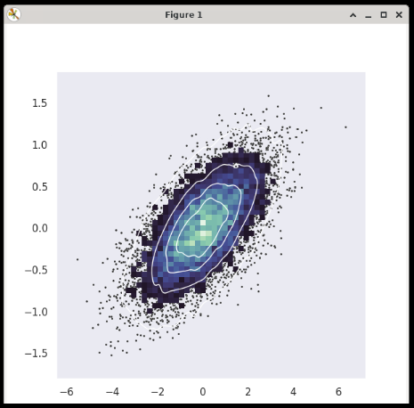

Seaborn
Seaborn is a data visualization library for Python built on top of Matplotlib, and works well with pandas dataframes.
Examples
Note
The following examples are taken from Seaborn's official documents and uses sample data included in the package.
Lineplot
import matplotlib.pyplot as plt
import seaborn as sns
sns.set_theme(style="darkgrid")
# Load an example dataset with long-form data
fmri = sns.load_dataset("fmri")
# Plot the responses for different events and regions
sns.lineplot(x="timepoint", y="signal",
hue="region", style="event",
data=fmri)
plt.show()
Output:

Scatterplot
import matplotlib.pyplot as plt
import numpy as np
import seaborn as sns
sns.set_theme(style="dark")
# Simulate data from a bivariate Gaussian
n = 10000
mean = [0, 0]
cov = [(2, .4), (.4, .2)]
rng = np.random.RandomState(0)
x, y = rng.multivariate_normal(mean, cov, n).T
# Draw a combo histogram and scatterplot with density contours
f, ax = plt.subplots(figsize=(6, 6))
sns.scatterplot(x=x, y=y, s=5, color=".15")
sns.histplot(x=x, y=y, bins=50, pthresh=.1, cmap="mako")
sns.kdeplot(x=x, y=y, levels=5, color="w", linewidths=1)
plt.show()
Output:

Reference
- Seaborn at pydata.org